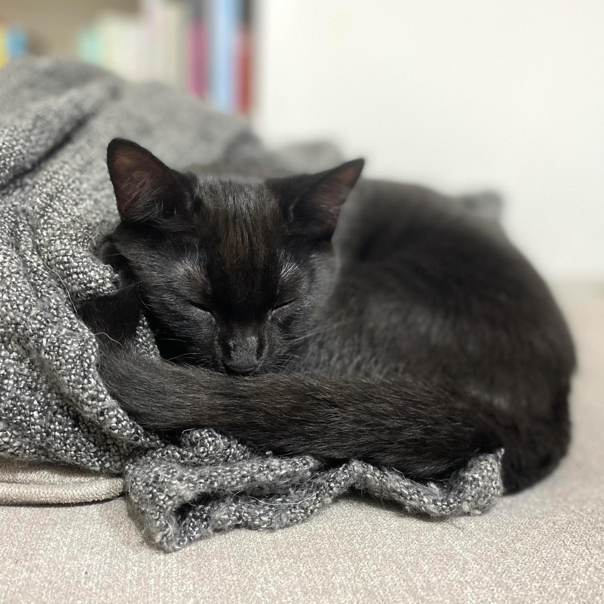

Basic Cat Care
Nutrition

A cats's diet should be rich with taurine, ammino acids, high protein, and healthy fats.
Raw meat, milk, and canned tuna should never be given, as it can be toxic.
Treats should be limited to less than 15% of their total daily intake.
Water bowls should be cleaned everyday and filled with fresh water.
Dry food can be mixed with semi-moist food and fresh food.
Exercise
You should play with your cat for at least 15 min a day.
Give them toys with feathers and strings and lasers. They like to use their hunting skills.
Playing is important to keep their weight healthy and mental wellbeing sharp.
Cats can suffer from depression and act out if they lack interactions.
Maintenance
Cats need to see the vet once a year, it is important for them to get their shots.
You should aim to brush your cat's fur at least once a week if it has short fur, and once a day if it has long fur.
Checking of claws should happen weekly, claws may need trimming.
Cats should never be declawed, it is cruel and extremely painful for them.
Cats will lick themselves as a form of cleaning.
Use a cat toothbrush and toothpaste once a week.
They do not need to be bathed.
Housing
Outdoor cats can be run over, eaten by wild animals, catch a disease, or get fleas.
cats like a blanket and soft bedding that is bigger than them.
Litter box should always remain in the same spot and should be put in a quiet space.
Youtube video "Everything You Need for Your Cat | 10 Cat Essentials for New Guardians"